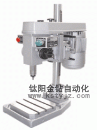
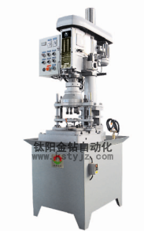
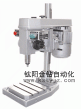
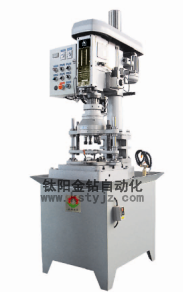

購台灣攻牙機選鈦陽金鑽牌
文章出處：未知責任編輯：鈦陽金鑽自動化人氣：發表時間：2014-01-09 09:12
目前行業市場的攻牙機廠家極多，攻牙機行業比較混亂。很多小作坊、零星小廠採購些配件都可以加工組裝攻牙機，但在質量與售後方面卻沒有任何保障。
鈦陽金鑽攻牙機是採用台灣原裝軍工精密機芯、齒輪組保證了極大的精密度的同時還為客戶做好售後服務，無論您在國內任何一個省任何一個城市我們都負責上門維修。
近期我們經常接到維修報表，有很多都不是本公司生產銷售的，都是買完後要麼是找不到銷售商或者與銷售商在上門售後方面發生爭執無法進行後續維護的情況後找到了我們。這種事情是任何一個商家都不願意看到的，因此鈦陽金鑽告誡各位機械加工行業的領導者，採購是小使用是大，購買任何品牌的機器他的售後維修是最重要的，沒有一台不需要修理的機器，所以不要貪圖小利給自己日後帶來極大的麻煩。 下面我為您接受 鈦陽金鑽攻牙機的優勢與使用細節

1. 台灣鈦陽金鑽牌攻牙機操作簡單，初學者可順利使用。
2. 台灣鈦陽金鑽牌攻牙機，工作時，只需將零件毛坯放入料斗中即可自動進料，自動攻牙、一個工人可以同時操作多台設備，節約勞動力成本。
3. 台灣鈦陽金鑽牌攻牙機速度快、精度高、攻出來的牙可通過牙規檢測。
4. 台灣鈦陽金鑽牌攻牙機可作高速連續循環運轉，特殊馬達能持久耐用，可實現自動化。
5. 台灣鈦陽金鑽牌攻牙機的速度快、精度高；連續、單向、循環都能自動，操作者雙手完全可以離開機器，實現自動工作，
6. 台灣鈦陽金鑽牌多軸器，根據不同孔徑的孔可選擇我司開發的油壓自動鑽孔機或配普通的台鑽、立鑽等機床。
7. 根據產品的不同，量身定制專用多軸鑽孔器、多軸器、多孔鑽、多頭鑽。
提供的自動攻牙機使用範圍 按行業劃分：
1、電子業：機殼，手機殼、光碟殼、硬碟殼、監視器扳金、液晶螢幕扳金、筆記型電腦機殼、數位相機殼……；
2、汽、機車業：扳金、引擎、變速箱；
3、自行車業;
4、電動工具業：木工機具外殼及零件；
5、塑膠生產業：亞克力、塑鋼、塑膠射出成型
6、電扇吊扇業；
7、馬達業；
8、針車業；
9、航太工業。
按工具劃分：
1、沖床業：下料後，攻絲機可配合多軸器一次或多次將所有螺絲孔攻牙；
2、壓鑄業：鋁合金、鋅合金壓鑄成型後，依需求先鑽孔後（可預留），再攻牙，可配合多軸器或設計專用機減少加工程序；
3、塑膠射出成型業；
4、電腦車床、銑床（中心削機）業；可經由中心切削機將所有絲孔先鑽孔後，再由攻牙機配合多軸器一次將絲攻完成，可減少中心加工機的時間，電腦車床大孔徑之螺紋可由車床先將孔鑽好，再攻牙機攻牙；
5、粉未冶金：由於材料較難加工，所以用本公司之攻牙可增加絲攻之壽命在旦夕；
6、鑄造業：重力鑄造，翻砂脫蠟、鑄造。

攻牙機的攻牙技巧
攻牙：製作內鏍紋叫攻牙，它的工具叫絲錐。
套扣(絲)：製作外螺紋就是套絲,工具:就是扳牙。
攻牙的要點：
1、工件上螺紋底孔的孔口要倒角，通孔螺紋兩端都倒角。
2、工件夾位置要正確，盡量使螺紋孔中心線置於水平或豎直位置，使攻牙容易判斷絲錐軸線是否垂直於工件的平面。
3、在攻牙開始時，要盡量把絲錐放正，然後對絲錐加壓力並轉動絞手，當切入1-2圈時，仔細檢查和校正絲錐的位置。一般切入3-4圈螺紋時，絲錐位置應正確無誤。以後，只須轉動絞手，而不應再對絲錐加壓力，否則螺紋牙形將被損壞。
4、攻牙時，每扳轉絞手1/2-1圈，就應倒轉約1/2圈，使切屑碎斷後容易排出，並可減少切削刃因粘屑而使絲錐軋住現象。
5、攻不通的螺孔時，要經常退出絲錐，排除孔中的切屑。
6、攻塑性材料的螺孔時，要加潤滑冷卻液。對於鋼料，一般用機沒或濃度較大的乳化液要求較高的可用菜油或二硫化鉬等。對於不�袗�，可用30號機油或硫化油。
7、攻牙過程中換用後一支絲錐時，要用手先旋入已攻出和螺紋中，至不能再旋進時，然後用絞手扳轉。在末錐攻完退出時，也要避免快速轉動絞手，最好用手旋出，以保證已攻好的螺紋質量不受影響。
鈦陽金鑽攻牙機是採用台灣原裝軍工精密機芯、齒輪組保證了極大的精密度的同時還為客戶做好售後服務，無論您在國內任何一個省任何一個城市我們都負責上門維修。
近期我們經常接到維修報表，有很多都不是本公司生產銷售的，都是買完後要麼是找不到銷售商或者與銷售商在上門售後方面發生爭執無法進行後續維護的情況後找到了我們。這種事情是任何一個商家都不願意看到的，因此鈦陽金鑽告誡各位機械加工行業的領導者，採購是小使用是大，購買任何品牌的機器他的售後維修是最重要的，沒有一台不需要修理的機器，所以不要貪圖小利給自己日後帶來極大的麻煩。 下面我為您接受 鈦陽金鑽攻牙機的優勢與使用細節

1. 台灣鈦陽金鑽牌攻牙機操作簡單，初學者可順利使用。
2. 台灣鈦陽金鑽牌攻牙機，工作時，只需將零件毛坯放入料斗中即可自動進料，自動攻牙、一個工人可以同時操作多台設備，節約勞動力成本。
3. 台灣鈦陽金鑽牌攻牙機速度快、精度高、攻出來的牙可通過牙規檢測。
4. 台灣鈦陽金鑽牌攻牙機可作高速連續循環運轉，特殊馬達能持久耐用，可實現自動化。
5. 台灣鈦陽金鑽牌攻牙機的速度快、精度高；連續、單向、循環都能自動，操作者雙手完全可以離開機器，實現自動工作，
6. 台灣鈦陽金鑽牌多軸器，根據不同孔徑的孔可選擇我司開發的油壓自動鑽孔機或配普通的台鑽、立鑽等機床。
7. 根據產品的不同，量身定制專用多軸鑽孔器、多軸器、多孔鑽、多頭鑽。
提供的自動攻牙機使用範圍 按行業劃分：
1、電子業：機殼，手機殼、光碟殼、硬碟殼、監視器扳金、液晶螢幕扳金、筆記型電腦機殼、數位相機殼……；
2、汽、機車業：扳金、引擎、變速箱；
3、自行車業;
4、電動工具業：木工機具外殼及零件；
5、塑膠生產業：亞克力、塑鋼、塑膠射出成型
6、電扇吊扇業；
7、馬達業；
8、針車業；
9、航太工業。
按工具劃分：
1、沖床業：下料後，攻絲機可配合多軸器一次或多次將所有螺絲孔攻牙；
2、壓鑄業：鋁合金、鋅合金壓鑄成型後，依需求先鑽孔後（可預留），再攻牙，可配合多軸器或設計專用機減少加工程序；
3、塑膠射出成型業；
4、電腦車床、銑床（中心削機）業；可經由中心切削機將所有絲孔先鑽孔後，再由攻牙機配合多軸器一次將絲攻完成，可減少中心加工機的時間，電腦車床大孔徑之螺紋可由車床先將孔鑽好，再攻牙機攻牙；
5、粉未冶金：由於材料較難加工，所以用本公司之攻牙可增加絲攻之壽命在旦夕；
6、鑄造業：重力鑄造，翻砂脫蠟、鑄造。

攻牙機的攻牙技巧
攻牙：製作內鏍紋叫攻牙，它的工具叫絲錐。
套扣(絲)：製作外螺紋就是套絲,工具:就是扳牙。
攻牙的要點：
1、工件上螺紋底孔的孔口要倒角，通孔螺紋兩端都倒角。
2、工件夾位置要正確，盡量使螺紋孔中心線置於水平或豎直位置，使攻牙容易判斷絲錐軸線是否垂直於工件的平面。
3、在攻牙開始時，要盡量把絲錐放正，然後對絲錐加壓力並轉動絞手，當切入1-2圈時，仔細檢查和校正絲錐的位置。一般切入3-4圈螺紋時，絲錐位置應正確無誤。以後，只須轉動絞手，而不應再對絲錐加壓力，否則螺紋牙形將被損壞。
4、攻牙時，每扳轉絞手1/2-1圈，就應倒轉約1/2圈，使切屑碎斷後容易排出，並可減少切削刃因粘屑而使絲錐軋住現象。
5、攻不通的螺孔時，要經常退出絲錐，排除孔中的切屑。
6、攻塑性材料的螺孔時，要加潤滑冷卻液。對於鋼料，一般用機沒或濃度較大的乳化液要求較高的可用菜油或二硫化鉬等。對於不�袗�，可用30號機油或硫化油。
7、攻牙過程中換用後一支絲錐時，要用手先旋入已攻出和螺紋中，至不能再旋進時，然後用絞手扳轉。在末錐攻完退出時，也要避免快速轉動絞手，最好用手旋出，以保證已攻好的螺紋質量不受影響。
上一篇：攻牙機到自動攻牙機-金鑽牌攻牙機 | 下一篇：攻牙機多軸器在鑽床領域的應用
相關資訊
- 自動鑽床自動攻牙機離合器有什麼作用'>自動鑽床自動攻牙機離合器有什麼作用
- 台式攻牙機,台式鑽床,自動鑽孔攻牙機工
- 淺談自動攻牙機改裝價格'> 淺談自動攻牙機改裝價格
- 自動攻牙機空芯鑽頭操作注意事項'>自動攻牙機空芯鑽頭操作注意事項
- 攻牙機廠家解釋為什麼要選擇多軸鑽孔器'>攻牙機廠家解釋為什麼要選擇多軸鑽孔器
- 全自動自動攻牙機報價與售後服務'>全自動自動攻牙機報價與售後服務
- 攻牙機到自動攻牙機-金鑽牌攻牙機'>攻牙機到自動攻牙機-金鑽牌攻牙機
- 多工位自動鑽孔攻牙組合機_鈦陽金鑽自動'>多工位自動鑽孔攻牙組合機_鈦陽金鑽自動
- 攻牙機多軸器在鑽床領域的應用'>攻牙機多軸器在鑽床領域的應用
- 優質的螺母攻牙機'>優質的螺母攻牙機


推薦文章
- 影響電動攻牙機性能的
- 何以自動攻牙機可以做
- 攻螺紋前鑽底孔直徑和
- 鑽孔機如何選擇,台式自
- 攻牙油 百 科
- 自動鑽床自動攻牙機離
- SPS-全自動鑽孔倒角攻牙
- 攻牙機原理,多功能機床
- 動力頭基本構造及相關
- 自動攻牙機深孔。小孔